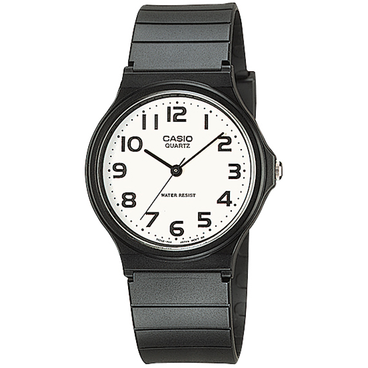
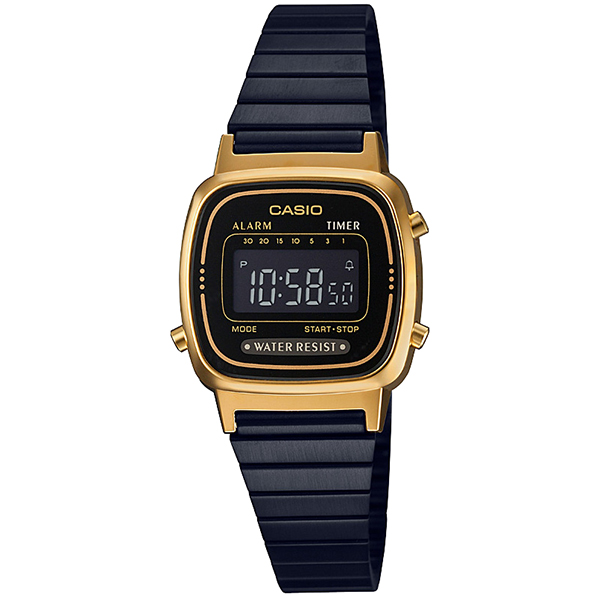
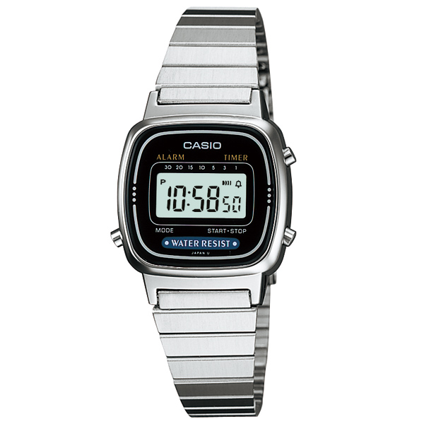
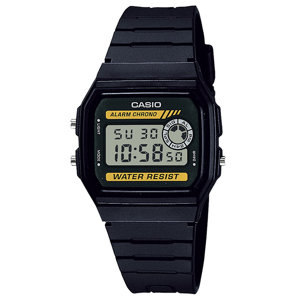

Q1.時計は自分自身を表現することができると思う
Q2.誕生日は祝うより祝われたい
Q3.過去今現在自分の腕時計を持っている
Q4.他人に自分の時計を自慢したい
Q5.時計をつけるなら重たい物より軽い物の方がいい

樹脂製のバンドを採用したチープカシオです。オフホワイトカラーの文字盤に、ブラックのアワーマークと針のコントラストがおしゃれ。アナログ表示タイプで、クラシカルなデザインの製品を探している方におすすめのモデルです。また、樹脂ガラスを採用しており、重量は20gととても軽いため、この時計は基本男性向きと書いていますが、女性でも使用しても違和感なく使用することができます。日常生活防水に対応しているので、顔を洗ったり急な雨に降られたりしたくらいであれば心配いりません。ただし、水泳や洗車などの時は使用しない方がいいでしょう。生活防水にも限度ありですね。

画像で見ると樹脂バンドに見えなくないですが、実はステンレスバンドタイプのレディース向きチープカシオです。ステンレスのバンドを黒く着色していることで、ケースの黄金色と豪華な調和をもたらしてています。この配色はクールな女性のファッションにも使いどころが多く、さまざまな日常生活の場面で活躍します。基本的にカシオに備わっている、日常防水やアラーム、タイマーなどの機能もあります。また、プリセットタイマー機能を搭載しているのが特徴。1分から最大30分までのタイマーをセットできるため、料理をするときなどにも重宝します。あなたが自分へのクールな印象と日常生活の時間の管理において上乗思考を持ちたいのならとてもお勧めできます。

デジタル表示形式を採用した、レディース用のチープカシオです。ステンレススチール素材のメタルバンドを採用。シンプルなデザインなので、プライベートでもビジネスシーンでも違和感なく使えるのが魅力です。また、プリセットタイマー機能を搭載しているのが特徴。1分から最大30分までのタイマーをセットできるため、料理をするときなどにも重宝します。メタルバンドを採用し重量感を出しながらも、本体重量は26gととても軽量。着けていることを感じさせない、軽さも本モデルの魅力です。あなたの身軽さと時間管理においてこの時計を使えば、ビジネスはもちろんのこと、日常生活の時間という物を時計を通して感覚的にコントロールできることでしょう。

文字が読みやすい、デジタル表示タイプのチープカシオです。薄型で軽量なのが特徴。着けてることを感じさせない、あなたが普段使いの腕時計を探しているのならおすすめできます。カシオならではのアラーム機能や内臓LEDライト、日常防水にも対応。樹脂製のバンドや軽量なおかげで、汗をかきやすいスポーツシーンにもおすすめです。